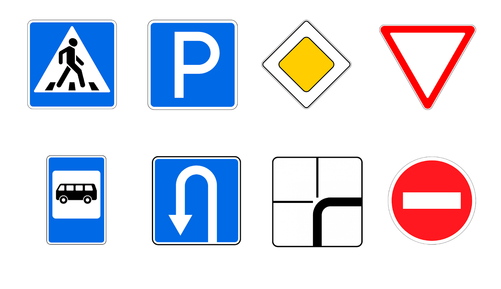
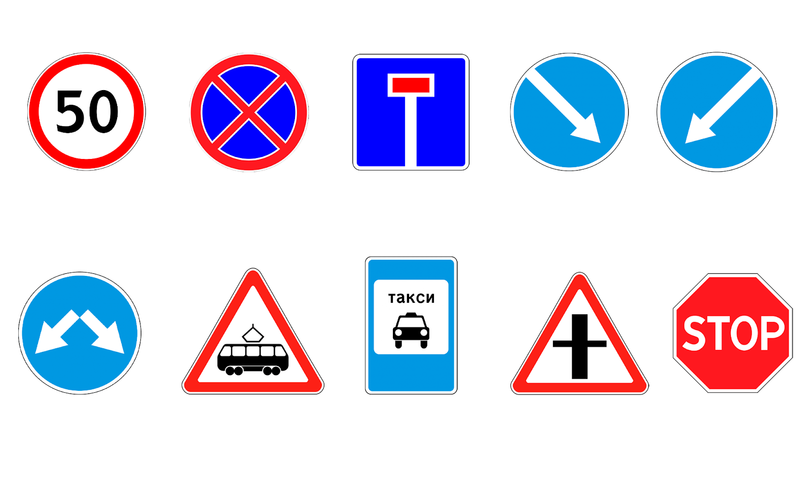
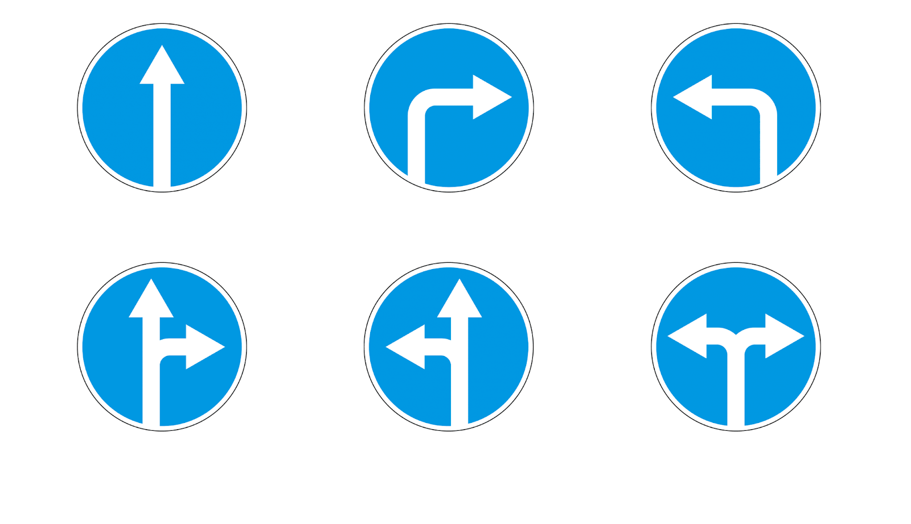
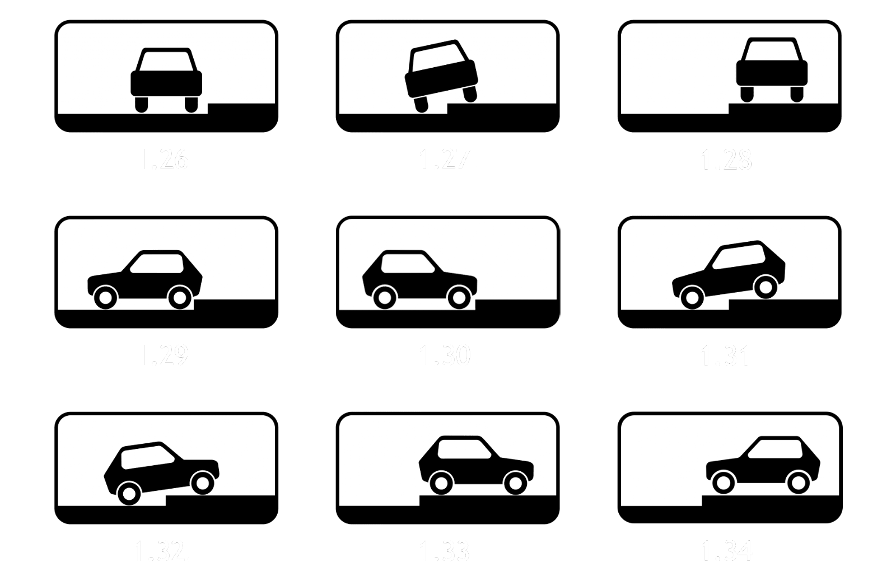
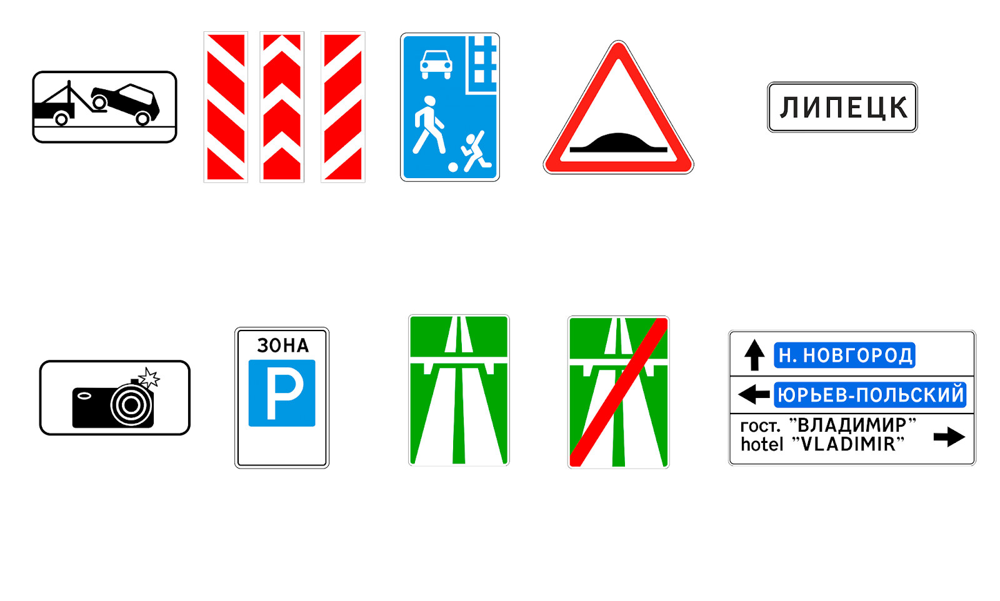
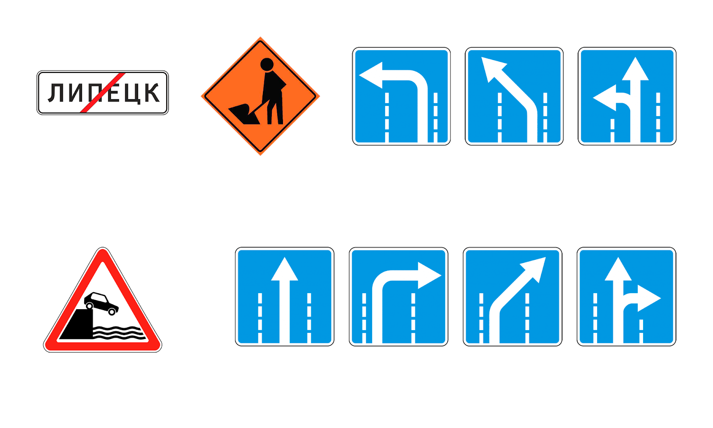

Правила дорожного движения Российской Федерации
Принят Государственной Думой 30 августа 2026 года.
Одобрен Советом Федерации 01 сентября 2026 года.
Глава I. Общие положения
Статья 1.1.
Настоящие Правила дорожного движения (в дальнейшем — Правила) устанавливают единый порядок дорожного движения на всей территории Российской Федерации. Другие нормативные правовые акты, касающиеся дорожного движения, должны основываться на требованиях Правил и не противоречить им.
Статья 1.2.
В Правилах используются следующие основные понятия и термины:
1) велосипедист — лицо, управляющее велосипедом;
2) водитель — лицо, управляющее каким-либо транспортным средством, погонщик, ведущий по дороге вьючных, верховых животных или стадо. К водителю приравнивается обучающий вождению;
3) вынужденная остановка — прекращение движения транспортного средства из-за его технической неисправности или опасности, создаваемой перевозимым грузом, состоянием водителя (пассажира) или появлением препятствия на дороге;
4) государственная инспекция безопасности дорожного движения (ГИБДД) — орган министерства внутренних дел, на который возложено обеспечение безопасности дорожного движения;
5) дорога — обустроенная или приспособленная и используемая для движения транспортных средств полоса земли либо поверхность искусственного сооружения. Дорога включает в себя одну или несколько проезжих частей;
6) дорожное движение — совокупность общественных отношений, возникающих в процессе перемещения людей и грузов с помощью транспортных средств или без таковых в пределах дорог;
7) дорожно-патрульная служба (ДПС) — органы обеспечения безопасности дорожного движения в органа внутренних дел;
8) дорожно-транспортное происшествие (ДТП) — событие, возникшее в процессе движения по дороге транспортного средства и с его участием, при котором погибли или ранены люди, повреждены транспортные средства, сооружения, грузы либо причинен иной материальный ущерб;
9) обгон — опережение одного или нескольких транспортных средств, связанное с выездом на полосу, предназначенную для встречного движения, и последующим возвращением на ранее занимаемую полосу;
10) обочина — элемент дороги, примыкающий непосредственно к проезжей части, отличающийся типом покрытия или выделенный с помощью разметки;
11) опасность для движения — ситуация, возникшая в процессе дорожного движения, при которой продолжение движения в том же направлении и с той же скоростью создает угрозу возникновения дорожно-транспортного происшествия;
12) опережение — движение транспортного средства со скоростью, большей скорости попутного транспортного средства;
13) остановка — преднамеренное прекращение движения транспортного средства на время до 5 минут;
14) парковочное место (Парковка) — специально обозначенное и при необходимости обустроенное и оборудованное место, предназначенное для организованной стоянки транспортных средств;
15) перекресток — место пересечения, примыкания или разветвления дорог на одном уровне, ограниченное воображаемыми линиями. Не считаются перекрестками выезды с прилегающих территорий;
16) пешеход — лицо, находящееся вне транспортного средства на дороге либо на пешеходной дорожке;
17) преимущество (приоритет) — право на первоочередное движение в намеченном направлении по отношению к другим участникам движения;
18) регулировщик — сотрудник ДПС, осуществляющий регулирование дорожного движения;
19) стоянка — преднамеренное прекращение движения транспортного средства на время более 5 минут;
20) транспортное средство (ТС) — устройство, предназначенное для перевозки по дорогам людей, грузов или оборудования, установленного на нем;
21) тротуар — элемент дороги, предназначенный для движения пешеходов и примыкающий к проезжей части или к велосипедной дорожке либо отделенный от них газоном;
22) эксплуатация транспортного средства — использование транспортного средства для движения.
23) перестроение — выезд из занимаемой полосы или занимаемого ряда с сохранением первоначального направления движения.
24) прилегающая территория — территория, непосредственно прилегающая к дороге и не предназначенная для сквозного движения транспортных средств (дворы, жилые массивы, автостоянки, АЗС, предприятия и тому подобное). Движение по прилегающей территории осуществляется в соответствии с настоящими Правилами;
25) проезжая часть — элемент дороги, предназначенный для движения безрельсовых транспортных средств;
26) центр организации дорожного движения — Государственное казенное учреждение Центр организации дорожного движения субъектов Российской Федерации, с отраслевым подчинением Министерству социального развития Российской Федерации, на который возложена организация дорожного движения.
Статья 1.3.
Участники дорожного движения обязаны знать и соблюдать относящиеся к ним требования Правил, сигналов светофоров, знаков и разметки, а также выполнять распоряжения регулировщиков, действующих в пределах предоставленных им прав и регулирующих дорожное движение.
Статья 1.4.
Лица, нарушившие Правила, несут ответственность в соответствии с законодательством Российской Федерации.
Статья 1.5.
Под опасным вождением понимается управление транспортным средством, выражающееся в неоднократном совершении одного или совершении нескольких следующих друг за другом действий, заключающихся в невыполнении при перестроении требования уступить дорогу транспортному средству, пользующемуся преимущественным правом движения, перестроении при интенсивном движении, когда все полосы движения заняты, кроме случаев поворота налево или направо, разворота, остановки или объезда препятствия, несоблюдении безопасной дистанции до движущегося впереди транспортного средства, несоблюдении бокового интервала, резком торможении, если такое торможение не требуется для предотвращения дорожно-транспортного происшествия, препятствовании обгону, если указанные действия повлекли создание водителем в процессе дорожного движения ситуации, при которой его движение и (или) движение иных участников дорожного движения в том же направлении и с той же скоростью создает угрозу гибели или ранения людей, повреждения транспортных средств, сооружений, грузов или причинения иного материального ущерба.
Статья 1.6.
На дорогах установлено правостороннее движение транспортных средств.
Глава II. Обязанности водителей и пассажиров
Статья 2.1.
Водитель транспортного средства обязан иметь при себе и по требованию сотрудников ГИБДД передавать им для проверки:
а) водительское удостоверение;
б) технический паспорт транспортного средства;
в) разрешение на управление транспортным средством (в случае временного пользования, документ пишется от имени владельца).
Статья 2.2.
Водитель транспортного средства обязан:
а) быть пристегнутым и не перевозить пассажиров, не пристегнутых ремнями;
б) перед выездом проверить и в пути обеспечить исправное техническое состояние транспортного средства в соответствии со статьей 13.1 Правил.
в) в случаях предусмотренных статьей 15.2 Правил водитель обязан покинуть транспортное средство и не отходить дальше чем на 15 метров от места остановки, согласно выдвинутому устному требованию сотрудником Государственной Инспекции Безопасности Дорожного Движения, если таковое требование законно и обосновано.
Статья 2.3.
По требованию сотрудника ГИБДД водитель обязан проходить освидетельствование на состояние алкогольного опьянения.
Статья 2.4.
Водителю запрещается управлять транспортным средством:
а) в состоянии опьянения (алкогольного, наркотического или иного), под воздействием лекарственных препаратов, ухудшающих реакцию и внимание, в болезненном или утомленном состоянии, ставящем под угрозу безопасность движения;
б) в случае отсутствия у него действующего водительского удостоверения.
Статья 2.5.
Водитель обязан соблюдать настоящие Правила. Водитель обязан выполнять требования сотрудников ГИБДД в пределах их полномочий по ведению надзора в сфере безопасности дорожного движения.
Статья 2.6.
При дорожно-транспортном происшествии (далее — ДТП) водитель, причастный к нему, обязан незамедлительно остановить (не трогать с места) транспортное средство, включить аварийную сигнализацию и выставить знак аварийной остановки, не перемещать предметы, имеющие отношение к происшествию, после чего вызвать сотрудников дорожно-патрульной службы. Дальнейшие действия водителя определяются сотрудниками ГИБДД.
Статья 2.7.
1. Пассажиры обязаны:
а) при поездке на транспортном средстве, оборудованном ремнями безопасности, быть пристегнутыми ими, а при поездке на мотоцикле — быть в застегнутом мотошлеме;
б) посадку и высадку производить со стороны тротуара или обочины и только после полной остановки транспортного средства.
2. Если посадка и высадка невозможна со стороны тротуара или обочины, она может осуществляться со стороны проезжей части при условии, что это будет безопасно и не создаст помех другим участникам движения.
Статья 2.8.
Пассажирам запрещается:
а) отвлекать водителя от управления транспортным средством во время его движения;
б) при поездке на грузовом автомобиле с бортовой платформой стоять, сидеть на бортах или на грузе выше бортов;
в) открывать двери транспортного средства во время его движения.
Глава III. Применение специальных, аварийных и звуковых сигналов, световых приборов
Статья 3.1.
Водители транспортных средств с включенным проблесковым маячком синего цвета, выполняя неотложное служебное задание, могут отступать от требований главы 5 (кроме сигналов регулировщика) и иных глав настоящих Правил.
Для получения преимущества перед другими участниками движения водители таких транспортных средств должны включить проблесковый маячок синего цвета и специальный звуковой сигнал. Воспользоваться приоритетом они могут только убедившись, что им уступают дорогу.
Этим же правом пользуются водители транспортных средств, сопровождаемых транспортными средствами, имеющими нанесенные на наружные поверхности специальные цветографические схемы, с включенными проблесковыми маячками синего и красного цветов и специальным звуковым сигналом, в случаях, установленных настоящей статьей.
Статья 3.2.
При приближении транспортного средства с включенными проблесковым маячком синего цвета и специальным звуковым сигналом водители обязаны уступить дорогу для обеспечения беспрепятственного проезда указанного транспортного средства.
При приближении транспортного средства, имеющего нанесенные на наружные поверхности специальные цветографические схемы, с включенными проблесковыми маячками синего и красного цветов и специальным звуковым сигналом водители обязаны уступить дорогу для обеспечения беспрепятственного проезда указанного транспортного средства, а также сопровождаемого им транспортного средства (сопровождаемых транспортных средств).
Запрещается выполнять обгон транспортного средства, имеющего нанесенные на наружные поверхности специальные цветографические схемы с включенными проблесковым маячком синего и красного цвета.
Статья 3.3.
Приближаясь к стоящему транспортному средству с включенным проблесковым маячком синего цвета, водитель должен снизить скорость, чтобы иметь возможность немедленно остановиться в случае необходимости.
Статья 3.4.
1. Проблесковый маячок желтого или оранжевого цвета должен быть включен на транспортных средствах в следующих случаях:
а) выполнение работ по строительству, ремонту или содержанию дорог, погрузке поврежденных, неисправных и перемещаемых транспортных средств;
б) движение крупногабаритных транспортных средств, а также перевозка грузов повышенной опасности;
в) сопровождение тяжеловесных и (или) крупногабаритных транспортных средств, а также транспортных средств, осуществляющих перевозки опасных грузов;
г) сопровождение организованных групп велосипедистов при проведении тренировочных мероприятий на автомобильных дорогах общего пользования.
2. Включенный проблесковый маячок желтого или оранжевого цвета не дает преимущества в движении и служит для предупреждения других участников движения об опасности.
Статья 3.5.
Использовать специальные сигналы разрешается, в случае:
а) выезда на вызов, место происшествия, место проведения специальных операций;
б) транспортировки задержанных в орган дознания и/или место заключения под стражу;
в) транспортировки больных, раненых сотрудниками медицинских организаций в городскую больницу;
г) патрулирования дорог, надзора за безопасностью дорожного движения сотрудниками ГИБДД;
д) исполнения иных обязанностей, предусмотренных законодательством.
Статья 3.6.
В случае использования проблесковых маячков синего цвета разрешаются незначительные нарушения настоящих Правил, а именно:
а) нарушение скоростного режима, не более чем на 40 км/ч от установленного.
Примечание: для сотрудников ГИБДД ограничение отсутствует во время преследования транспортного средства, нарушающего Правила, в целях его остановки;
б) нарушение дорожной разметки;
в) нарушение правил остановки и стоянки, в случае если не является возможным осуществить правильную остановку и стоянку ТС;
г) нарушения дистанции движения ТС;
д) нарушения обгона ТС.
Статья 3.7.
Аварийная сигнализация должна быть включена:
а) при дорожно-транспортном происшествии;
б) при вынужденной остановке в местах, где остановка запрещена (вынужденная остановка должна быть связана с технической неисправностью, не позволяющей дальнейшее движение);
в) при ослеплении водителя светом фар;
г) при буксировке (на буксируемом транспортном средстве).
Статья 3.8.
Звуковые сигналы могут применяться только:
а) для предупреждения других водителей о намерении произвести обгон вне населенных пунктов;
б) в случаях, когда это необходимо для предотвращения дорожно-транспортного происшествия.
Статья 3.9.
В темное время суток и в условиях недостаточной видимости независимо от освещения дороги, а также в тоннелях на движущемся транспортном средстве должны быть включены фары дальнего или ближнего света. Дальний свет должен быть переключен на ближний в населенных пунктах, если дорога освещена.
В светлое время суток на всех движущихся транспортных средствах (кроме велосипедов) с целью их обозначения должны включаться фары ближнего света или дневные ходовые огни.
Глава IV. Обязанности пешеходов, велосипедистов
Статья 4.1.
Пешеходы должны двигаться по тротуарам или пешеходным переходам.
Статья 4.2.
1. Пешеходам запрещено двигаться по дорогам, за исключением пешеходных переходов.
2. Пешеходам разрешается двигаться по обочине дороги, в случае, если движение по тротуару невозможно или опасно.
Статья 4.3.
Не являются пешеходами следующие участники дорожного движения:
а) сотрудники ГИБДД;
б) водители остановленных транспортных средств сотрудниками ГИБДД;
в) сотрудники медицинских организаций при оказании медицинской помощи;
г) сотрудники государственных организаций при проведении процессуальных действий, операций по ликвидации преступников.
Статья 4.4.
В жилой зоне, то есть на территории, въезды на которую и выезды с которой обозначены знаком 1.36., движение пешеходов разрешается как по тротуарам, так и по проезжей части. В жилой зоне пешеходы имеют преимущество, при этом они не должны создавать на проезжей части необоснованные помехи для движения транспортных средств.
Статья 4.5.
Движение велосипедистов в возрасте должно осуществляться по велосипедной, велопешеходной дорожкам, проезжей части велосипедной зоны или полосе для велосипедистов.
Статья 4.6.
Допускается движение велосипедистов:
а) по правому краю проезжей части — в следующих случаях:
— отсутствуют велосипедная и велопешеходная дорожки, полоса для велосипедистов либо отсутствует возможность двигаться по ним;
— габаритная ширина велосипеда превышает 1 м;
— движение велосипедистов осуществляется в колоннах.
б) по обочине — в случае, если отсутствуют велосипедная и велопешеходная дорожки, полоса для велосипедистов либо отсутствует возможность двигаться по ним или по правому краю проезжей части;
в) по тротуару или пешеходной дорожке — в случае, если отсутствуют велосипедная и велопешеходная дорожки, полоса для велосипедистов либо отсутствует возможность двигаться по ним, а также по правому краю проезжей части или обочине.
Статья 4.7.
Выйдя на дорогу, пешеходы не должны задерживаться или останавливаться, если это не связано с обеспечением безопасности движения. Продолжать переход можно лишь убедившись в безопасности дальнейшего движения.
Статья 4.8.
При приближении транспортных средств с включенным проблесковым маячком синего цвета (синего и красного цветов) и специальным звуковым сигналом пешеходы обязаны воздержаться от перехода дороги, а пешеходы, находящиеся на дороге, должны незамедлительно освободить проезжую часть.
Статья 4.9.
На пешеходных переходах пешеходы могут выходить на дорогу после того, как оценят расстояние до приближающихся транспортных средств, их скорость и убедятся, что переход будет для них безопасен. При переходе дороги вне пешеходного перехода пешеходы, кроме того, не должны создавать помех для движения транспортных средств и выходить из-за стоящего транспортного средства или иного препятствия, ограничивающего обзорность, не убедившись в отсутствии приближающихся транспортных средств.
Глава V. Сигналы светофора и регулировщика
Статья 5.1.
В светофорах применяются световые сигналы зеленого, желтого, красного и бело-лунного цвета.
Статья 5.2.
Круглые сигналы светофора имеют следующие значения:
ЗЕЛЕНЫЙ СИГНАЛ разрешает движение;
ЖЕЛТЫЙ СИГНАЛ запрещает движение, кроме случаев, предусмотренных пунктом 6.14 Правил, и предупреждает о предстоящей смене сигналов;
КРАСНЫЙ СИГНАЛ, в том числе мигающий, запрещает движение.
Статья 5.3.
Сигналы регулировщика имеют следующие значения:
РУКИ ВЫТЯНУТЫ В СТОРОНЫ ИЛИ ОПУЩЕНЫ:
со стороны левого и правого бока разрешено движение транспортным средствам прямо и направо, пешеходам разрешено переходить проезжую часть;
со стороны груди и спины движение всех транспортных средств и пешеходов запрещено.
ПРАВАЯ РУКА ВЫТЯНУТА ВПЕРЕД:
со стороны левого бока разрешено движение транспортным средствам во всех направлениях;
со стороны груди всем транспортным средствам разрешено движение только направо;
со стороны правого бока и спины движение всех транспортных средств запрещено;
пешеходам разрешено переходить проезжую часть за спиной регулировщика.
РУКА ПОДНЯТА ВВЕРХ:
движение всех транспортных средств и пешеходов запрещено во всех направлениях, кроме случаев, предусмотренных пунктом 5.6 Правил.
Регулировщик может подавать жестами рук и другие сигналы, понятные водителям и пешеходам.
Для лучшей видимости сигналов регулировщик может применять жезл.
Статья 5.4.
Требование об остановке транспортного средства подается с помощью громкоговорящего устройства или жестом руки, направленной на транспортное средство. Водитель должен остановиться в указанном ему месте.
Статья 5.5.
При запрещающем сигнале светофора или регулировщика водители должны остановиться перед стоп-линией, а при ее отсутствии:
а) на перекрестке — перед пересекаемой проезжей частью (с учетом иных положений Правил), не создавая помех пешеходам;
б) перед железнодорожным переездом;
в) в других местах — перед светофором или регулировщиком, не создавая помех транспортным средствам и пешеходам, движение которых разрешено.
Статья 5.6.
Водителям, которые при включении желтого сигнала или поднятии регулировщиком руки вверх не могут остановиться, не прибегая к экстренному торможению в местах, определяемых статьей 5.5 Правил, разрешается дальнейшее движение.
Пешеходы и лица, использующие для передвижения средства индивидуальной мобильности, которые при подаче сигнала находились на проезжей части, должны освободить ее, а если это невозможно — остановиться на линии, разделяющей транспортные потоки противоположных направлений.
Статья 5.7.
Участники дорожного движения должны выполнять требования сигналов и распоряжения регулировщика, даже если они противоречат сигналам светофора, требованиям дорожных знаков или разметки.
В случае если значения сигналов светофора противоречат требованиям дорожных знаков приоритета, водители должны руководствоваться сигналами светофора.
Глава VI. Начало движения, маневрирование
Статья 6.1.
Перед началом движения, перестроением, поворотом (разворотом) и остановкой водитель обязан подавать сигналы световыми указателями поворота соответствующего направления, в случае если они установлены на транспортном средстве. При выполнении маневра не должны создаваться опасность для движения, а также помехи другим участникам дорожного движения.
Статья 6.2.
Подача сигнала указателями поворота должна производиться заблаговременно до начала выполнения маневра и прекращаться немедленно после его завершения. При этом сигнал не должен вводить в заблуждение других участников движения.
Подача сигнала не дает водителю преимущества и не освобождает его от принятия мер предосторожности.
Статья 6.3.
При выезде на дорогу с прилегающей территории водитель должен уступить дорогу транспортным средствам, лицам, использующим для передвижения средства индивидуальной мобильности, и пешеходам, движущимся по ней, а при съезде с дороги — пешеходам, велосипедистам путь движения которых он пересекает.
Статья 6.4.
При перестроении водитель должен уступить дорогу транспортным средствам, движущимся попутно без изменения направления движения. При одновременном перестроении транспортных средств, движущихся попутно, водитель должен уступить дорогу транспортному средству, находящемуся справа.
Статья 6.5.
Перед поворотом направо, налево или разворотом водитель обязан заблаговременно занять соответствующее крайнее положение на проезжей части, предназначенной для движения в данном направлении, кроме случаев, когда совершается поворот при въезде на перекресток, где организовано круговое движение.
Статья 6.6.
Поворот должен осуществляться таким образом, чтобы при выезде с пересечения проезжих частей транспортное средство не оказалось на стороне встречного движения.
При повороте направо транспортное средство должно двигаться по возможности ближе к правому краю проезжей части.
Статья 6.7.
Если транспортное средство из-за своих габаритов или по другим причинам не может выполнить поворот с соблюдением требований статьи 6.5 Правил, допускается отступать от них при условии обеспечения безопасности движения и если это не создаст помех другим транспортным средствам.
Статья 6.8.
При повороте налево или развороте вне перекрестка водитель безрельсового транспортного средства обязан уступить дорогу встречным транспортным средства.
Если при развороте вне перекрестка ширина проезжей части недостаточна для выполнения маневра из крайнего левого положения, его допускается производить от правого края проезжей части (с правой обочины). При этом водитель должен уступить дорогу попутным и встречным транспортным средствам.
Статья 6.9.
В случаях, когда траектории движения транспортных средств пересекаются, а очередность проезда не оговорена Правилами, дорогу должен уступить водитель, к которому транспортное средство приближается справа.
Статья 6.10.
При наличии полосы торможения водитель, намеревающийся повернуть, должен своевременно перестроиться на эту полосу и снижать скорость только на ней.
При наличии в месте въезда на дорогу полосы разгона водитель должен двигаться по ней и перестраиваться на соседнюю полосу, уступая дорогу транспортным средствам, движущимся по этой дороге.
Статья 6.11.
Разворот запрещается:
а) на пешеходных переходах;
б) в тоннелях;
в) на мостах, путепроводах, эстакадах и под ними;
г) на железнодорожных переездах;
д) в местах с видимостью дороги хотя бы в одном направлении менее 100 м;
е) в местах остановок маршрутных транспортных средств.
Статья 6.12.
Движение транспортного средства задним ходом разрешается при условии, что этот маневр будет безопасен и не создаст помех другим участникам движения. При необходимости водитель должен прибегнуть к помощи других лиц.
Движение задним ходом запрещается на перекрестках и в местах, где запрещен разворот согласно статье 6.11 Правил.
Глава VII. Расположение транспортных средств на проезжей части
Статья 7.1.
Количество полос движения для безрельсовых транспортных средств определяется разметкой и (или) знаками 1.46, 1.47, 1.48, 1.49 а если их нет, то самими водителями с учетом ширины проезжей части, габаритов транспортных средств и необходимых интервалов между ними. При этом стороной, предназначенной для встречного движения на дорогах с двусторонним движением без разделительной полосы, считается половина ширины проезжей части, расположенная слева, не считая местных уширений проезжей части (переходно-скоростные полосы, дополнительные полосы на подъем, заездные карманы мест остановок маршрутных транспортных средств).
На любых дорогах с двусторонним движением запрещается движение по полосе, предназначенной для встречного движения, если она отделена разделительной полосой, разметкой 2.1, 2.2.
Статья 7.2.
На дорогах с двусторонним движением, имеющих четыре или более полосы, запрещается выезжать для обгона или объезда на полосу, предназначенную для встречного движения. На таких дорогах повороты налево или развороты могут выполняться на перекрестках и в других местах, где это не запрещено Правилами, знаками и (или) разметкой.
Статья 7.3.
На дорогах с двусторонним движением, имеющих три полосы, обозначенные разметкой (за исключением разметки 2.3), из которых средняя используется для движения в обоих направлениях, разрешается выезжать на эту полосу только для обгона, объезда, поворота налево или разворота. Выезжать на крайнюю левую полосу, предназначенную для встречного движения, запрещается.
Статья 7.4.
Вне населенных пунктов, а также в населенных пунктах на дорогах, обозначенных знаком 1.41 или где разрешено движение со скоростью более 80 км/ч, водители транспортных средств должны вести их по возможности ближе к правому краю проезжей части. Запрещается занимать левые полосы движения при свободных правых.
В населенных пунктах с учетом требований настоящей статьи и иных статей Правил водители транспортных средств могут использовать наиболее удобную для них полосу движения. При интенсивном движении, когда все полосы движения заняты, менять полосу разрешается только для поворота налево или направо, разворота, остановки или объезда препятствия.
Статья 7.5.
Если проезжая часть разделена на полосы линиями разметки, движение транспортных средств должно осуществляться строго по обозначенным полосам. Наезжать на прерывистые линии разметки разрешается лишь при перестроении.
Статья 7.6.
При повороте на дорогу с реверсивным движением водитель должен вести транспортное средство таким образом, чтобы при выезде с пересечения проезжих частей транспортное средство заняло крайнюю правую полосу. Перестроение разрешается только после того, как водитель убедится, что движение в данном направлении разрешается и по другим полосам.
Статья 7.7.
Запрещается движение транспортных средств по разделительным полосам и обочинам, тротуарам и пешеходным дорожкам (за исключением случаев, предусмотренных статьями настоящих Правил), а также движение механических транспортных средств (кроме мопедов) по полосам для велосипедистов. Запрещается движение механических транспортных средств по велосипедным и велопешеходным дорожкам. Допускается движение машин дорожно-эксплуатационных и коммунальных служб, а также подъезд по кратчайшему пути транспортных средств, подвозящих грузы к торговым и другим предприятиям и объектам, расположенным непосредственно у обочин, тротуаров или пешеходных дорожек, при отсутствии других возможностей подъезда. При этом должна быть обеспечена безопасность движения.
Статья 7.8.
Водитель должен соблюдать такую дистанцию до движущегося впереди транспортного средства, которая позволила бы избежать столкновения, а также необходимый боковой интервал, обеспечивающий безопасность движения.
Статья 7.9.
На дорогах с двусторонним движением при отсутствии разделительной полосы островки направляющие, островки безопасности, тумбы и элементы дорожных сооружений (опоры мостов, путепроводов и тому подобное), находящиеся на середине проезжей части, водитель должен объезжать справа, если знаки и разметка не предписывают иное.
Глава VIII. Скорость движения
Статья 8.1.
Водитель должен вести транспортное средство со скоростью, не превышающей установленного ограничения, учитывая при этом интенсивность движения, особенности и состояние транспортного средства и груза, дорожные и метеорологические условия, в частности видимость в направлении движения. Скорость должна обеспечивать водителю возможность постоянного контроля за движением транспортного средства для выполнения требований Правил.
При возникновении опасности для движения, которую водитель в состоянии обнаружить, он должен принять возможные меры к снижению скорости вплоть до остановки транспортного средства.
Статья 8.2.
В населенных пунктах разрешается движение транспортных средств со скоростью не более 60 км/ч, а в жилых зонах, велосипедных зонах и на дворовых территориях не более 40 км/ч.
Статья 8.3.
Вне населенных пунктов разрешается движение:
а) мотоциклам, легковым автомобилям и грузовым автомобилям на автомагистралях — со скоростью не более 110 км/ч, на остальных дорогах — не более 90 км/ч, за исключением случаев, предусмотренных статьей 8.2 настоящего Кодекса.
б) автобусам, в которых места для сидения пассажиров оборудованы ремнями безопасности, предназначенным для перевозки исключительно сидящих пассажиров, — не более 90 км/ч, другим автобусам — не более 70 км/ч.
Статья 8.4.
Водителю запрещается:
а) превышать максимальную скорость, определенную технической характеристикой транспортного средства;
б) превышать скорость, указанную на знаке "Ограничение максимальной скорости";
в) создавать помехи другим транспортным средствам, двигаясь без необходимости со слишком малой скоростью;
г) резко тормозить, если это не требуется для предотвращения дорожно-транспортного происшествия.
Глава IX. Обгон, опережение, встречный разъезд
Статья 9.1.
Прежде чем начать обгон, водитель обязан убедиться в том, что полоса движения, на которую он собирается выехать, свободна на достаточном для обгона расстоянии и в процессе обгона он не создаст опасности для движения и помех другим участникам дорожного движения.
Статья 9.2.
Водителю запрещается выполнять обгон в случаях, если:
а) транспортное средство, движущееся впереди, производит обгон или объезд препятствия;
б) транспортное средство, движущееся впереди по той же полосе, подало сигнал поворота налево;
в) следующее за ним транспортное средство начало обгон;
г) по завершении обгона он не сможет, не создавая опасности для движения и помех обгоняемому транспортному средству, вернуться на ранее занимаемую полосу.
Статья 9.3.
Водителю обгоняемого транспортного средства запрещается препятствовать обгону посредством повышения скорости движения или иными действиями.
Статья 9.4.
Обгон запрещен:
а) на регулируемых перекрестках, а также на нерегулируемых перекрестках при движении по дороге, не являющейся главной;
б) на пешеходных переходах;
в) на железнодорожных переездах и ближе чем за 100 метров перед ними;
г) на мостах, путепроводах, эстакадах и под ними, а также в тоннелях
д) в конце подъема, на опасных поворотах и на других участках с ограниченной видимостью.
Статья 9.5.
В случае если вне населенных пунктов обгон или опережение тихоходного транспортного средства, крупногабаритного транспортного средства или транспортного средства, двигающегося со скоростью, не превышающей 30 км/ч, затруднены, водитель такого транспортного средства должен принять как можно правее, а при необходимости остановиться, чтобы пропустить следующие за ним транспортные средства.
Статья 9.6.
В случае если встречный разъезд затруднен, водитель, на стороне которого имеется препятствие, должен уступить дорогу. Уступить дорогу при наличии препятствия на уклонах, обозначенных знаками 1.44, должен водитель транспортного средства, движущегося на спуск.
Глава X. Остановка и стоянка
Статья 10.1.
Остановка и стоянка транспортных средств разрешаются на правой стороне дороги на обочине, а при ее отсутствии — на проезжей части у ее края и в случаях, установленных статьей 10.2 Правил, — на тротуаре.
Статья 10.2.
Ставить транспортное средство разрешается в один ряд параллельно краю проезжей части.
Способ постановки транспортного средства на стоянке (парковке) определяется знаком 1.40 и линиями дорожной разметки, знаком 1.40 с одной из табличек 1.26 — 1.34 и линиями дорожной разметки или без таковых.
Сочетание знака 1.40 с одной из табличек 1.26 — 1.34, а также линиями дорожной разметки допускает постановку транспортного средства под углом к краю проезжей части в случае, если конфигурация (местное уширение) проезжей части допускает такое расположение.
Стоянка на краю тротуара, граничащего с проезжей частью, разрешается только легковым автомобилям, мотоциклам и мопедам в местах, обозначенных знаком 1.40 с одной из табличек 1.26 — 1.34.
Статья 10.3.
Остановка запрещается:
а) на железнодорожных переездах, в тоннелях, а также на эстакадах, мостах, путепроводах (если для движения в данном направлении имеется менее трех полос) и под ними;
б) в местах, где расстояние между встречной полосой движения и остановившимся транспортным средством менее 3 м;
в) на пешеходных переходах и ближе 5 м перед ними;
г) на пересечении проезжих частей и ближе 5 м от края пересекаемой проезжей части, за исключением стороны напротив бокового проезда трехсторонних пересечений (перекрестков), имеющих сплошную линию разметки или разделительную полосу;
д) на островках направляющих и островках безопасности;
е) запрещена парковка на местах для инвалидов, на служебных парковочных зонах государственных учреждений без соответствующих документов;
ж) ближе 15 метров от мест остановки маршрутных транспортных средств или стоянки легковых такси (кроме остановки для посадки и высадки пассажиров, если это не создаст помех движению маршрутных транспортных средств или транспортных средств, используемых в качестве легкового такси).
Статья 10.4.
Стоянка запрещается:
а) в местах, где запрещена остановка;
б) вне населенных пунктов на проезжей части дорог, обозначенных знаком 1.3;
в) ближе 50 м от железнодорожных переездов.
Статья 10.5.
Запрещается открывать двери транспортного средства, если это создаст помехи другим участникам дорожного движения.
Статья 10.6.
Парковка ТС осуществляется на специально отведенных местах с специальными знаками и разметкой.
Статья 10.7.
Запрещено блокировать въезды/выезды из парковочных зон, дворовых зон, гаражей, в случае парковки.
Глава XI. Проезд перекрестков
Статья 11.1.
При повороте направо или налево водитель обязан уступить дорогу пешеходам и велосипедистам, пересекающим проезжую часть дороги, на которую он поворачивает.
Статья 11.2.
Запрещается выезжать на перекресток, пересечение проезжих частей или участка перекрестка, обозначенного разметкой 2.5, если впереди по пути следования образовался затор, который вынудит водителя остановиться, создав препятствие для движения транспортных средств в поперечном направлении, за исключением поворота направо или налево в случаях, установленных настоящими Правилами.
Статья 11.3.
Перекресток, где очередность движения определяется сигналами светофора или регулировщика, считается регулируемым.
При неработающих светофорах или отсутствии регулировщика перекресток считается нерегулируемым, и водители обязаны руководствоваться правилами проезда нерегулируемых перекрестков и установленными на перекрестке знаками приоритета.
Статья 11.4.
При повороте налево или развороте по зеленому сигналу светофора водитель транспортного средства обязан уступить дорогу транспортным средствам, движущимся со встречного направления прямо или направо.
Статья 11.5.
Водитель, въехавший на перекресток при разрешающем сигнале светофора, должен выехать в намеченном направлении независимо от сигналов светофора на выходе с перекрестка. Однако, если на перекрестке перед светофорами, расположенными на пути следования водителя, имеются стоп-линии, водитель обязан руководствоваться сигналами каждого светофора.
Статья 11.6.
При включении разрешающего сигнала светофора водитель обязан уступить дорогу транспортным средствам, завершающим движение через перекресток, и пешеходам, не закончившим переход проезжей части данного направления.
Статья 11.7.
На перекрестке неравнозначных дорог водитель транспортного средства, движущегося по второстепенной дороге, должен уступить дорогу транспортным средствам, приближающимся по главной, независимо от направления их дальнейшего движения.
Статья 11.8.
В случае, когда главная дорога на перекрестке меняет направление, водители, движущиеся по главной дороге, должны руководствоваться между собой правилами проезда перекрестков равнозначных дорог. Этими же правилами должны руководствоваться водители, движущиеся по второстепенным дорогам.
Статья 11.9.
На перекрестке равнозначных дорог, за исключением случая, предусмотренного статьей 11.10 Правил, водитель транспортного средства обязан уступить дорогу транспортным средствам, приближающимся справа.
Статья 11.10.
При въезде по дороге, не являющейся главной, на перекресток, на котором организовано круговое движение и который обозначен знаком 1.54, водитель транспортного средства обязан уступить дорогу транспортным средствам, движущимся по такому перекрестку.
Статья 11.11.
При повороте налево или развороте водитель транспортного средства обязан уступить дорогу транспортным средствам, движущимся по равнозначной дороге со встречного направления прямо или направо.
Статья 11.12.
Если водитель не может определить наличие покрытия на дороге (темное время суток, грязь, снег и тому подобное), а знаков приоритета нет, он должен считать, что находится на второстепенной дороге.
Глава XII. Движение по автомагистралям, движение в жилых зонах
Статья 12.1.
На автомагистралях запрещается:
а) движение пешеходов, лиц, домашних животных, велосипедов, мопедов, иных транспортных средств, скорость которых по технической характеристике или их состоянию менее 40 км/ч;
б) движение грузовых автомобилей с разрешенной максимальной массой более 3,5 т далее второй полосы;
в) остановка вне специальных площадок для стоянки, обозначенных знаком 1.40;
г) разворот и въезд в технологические разрывы разделительной полосы;
д) движение задним ходом.
Статья 12.2.
Требования статьи 12.1 Правил распространяются также на дороги, обозначенные "Дорога для автомобилей".
Статья 12.3.
В жилой зоне, то есть на территории, въезды на которую и выезды с которой обозначены знаками 1.36, движение пешеходов разрешается как по тротуарам, так и по проезжей части. В жилой зоне пешеходы имеют преимущество, при этом они не должны создавать на проезжей части необоснованные помехи для движения транспортных средств и лиц, использующих для передвижения средства индивидуальной мобильности.
Статья 12.4.
Требования статей 12.1 — 12.3 Правил распространяются также и на дворовые территории.
Глава XIII. Технические требования к транспортному средству
Статья 13.1.
Техническое состояние и оборудование транспортных средств, участвующих в дорожном движении, должны обеспечивать безопасность дорожного движения. Обязанность по поддержанию транспортных средств, участвующих в дорожном движении, в технически исправном состоянии возлагается на владельцев транспортных средств либо на лиц, эксплуатирующих транспортные средства.
Статья 13.2.
Запрещена эксплуатация транспортного средства при:
а) отсутствии государственных регистрационных знаков;
б) неисправности двигателя, его технического состояния менее 50% по техническому паспорту транспортного средства;
в) прочих технических неисправностях, мешающих движению и создающих опасность, утвержденных постановлением Правительства Российской Федерации, Правительств Федеральных округов Российской Федерации.
Статья 13.3.
Запрещена зеркальная тонировка.
Примечание: тонировка, поверхность которой способна образовывать оптические изображения предметов (в том числе источников света), отражая световые лучи.
Статья 13.4.
Запрещена эксплуатация транспортного на котором установлена тонировка, более 75% на боковых передних и лобовом стеклах (в том числе запрещены цветные пленки).
Статья 13.5.
1. Сотрудники государственных органов имеют право устанавливать на свои служебные автомобили тонировку, с светопропускаемостью ниже 25%, в целях обеспечения безопасности экипажа или груза, либо сокрытия личности лиц, находящихся в автомобиле.
2. Сотрудники Федеральной службы охраны Российской Федерации, Федеральной службы безопасности Российской Федерации и Правительства Российской Федерации имеют право устанавливать тонировку свыше 75% на служебные автомобили без ограничений, в целях обеспечения безопасности лиц или грузов, находящихся в автомобиле, либо сокрытия личности пассажиров или водителя.
Глава XIV. Пешеходные переходы и места остановок маршрутных транспортных средств, приоритет маршрутных транспортных средств
Статья 14.1.
Водитель транспортного средства, приближающегося к нерегулируемому пешеходному переходу (понятие аналогичное нерегулируемому перекрестку, обязан уступить дорогу пешеходам, переходящим дорогу или вступившим на проезжую часть (трамвайные пути) для осуществления перехода.
Статья 14.2.
Если перед нерегулируемым пешеходным переходом остановилось или снизило скорость транспортное средство, то водители других транспортных средств, движущихся в том же направлении, также обязаны остановиться или снизить скорость. Продолжать движение разрешено с учетом требований статьи 14.1 Правил.
Статья 14.3.
На регулируемых пешеходных переходах при включении разрешающего сигнала светофора водитель должен дать возможность пешеходам и лицам, использующим для передвижения средства индивидуальной мобильности, закончить пересечение проезжей части (трамвайных путей) соответствующего направления.
Статья 14.4.
Запрещается въезжать на пешеходный переход, если за ним образовался затор, который вынудит водителя остановиться на пешеходном переходе.
Статья 14.5.
Водитель должен уступить дорогу пешеходам, идущим к стоящему в месте остановки маршрутному транспортному средству или от него (со стороны дверей), если посадка и высадка производятся с проезжей части или с посадочной площадки, расположенной на ней.
Статья 14.6.
На дорогах с полосой для маршрутных транспортных средств, обозначенных знаками и разметкой, запрещаются движение и остановка других транспортных средств на этой полосе, за исключением транспортных средств, используемых в качестве легкового такси с нанесенными на автомобиле знаками такси.
На полосах для маршрутных транспортных средств разрешено движение велосипедистов в случае, если такая полоса располагается справа.
Водители транспортных средств, допущенных к движению по полосам для маршрутных транспортных средств, при въезде на перекресток с такой полосы могут отступать от требований дорожных знаков 1.19 — 1.24, 1.46 — 1.49 для продолжения движения по такой полосе.
Если эта полоса отделена от остальной проезжей части прерывистой линией разметки, то при поворотах транспортные средства должны перестраиваться на нее. Разрешается также в таких местах заезжать на эту полосу при въезде на дорогу и для посадки и высадки пассажиров у правого края проезжей части при условии, что это не создает помех маршрутным транспортным средствам.
Статья 14.7.
В населенных пунктах водители должны уступать дорогу троллейбусам и автобусам, начинающим движение от обозначенного места остановки. Водители троллейбусов и автобусов могут начинать движение только после того, как убедятся, что им уступают дорогу.
Глава XV. Положение об организации дорожного движения
Статья 15.1.
Сотрудники Государственной инспекции безопасности дорожного движения (далее — ГИБДД) могут регулировать дорожное движения в полной мере, показывая разрешенные и запрещенные направления движения. Сотрудники ГИБДД, а равно и сотрудники Центров организации дорожного движения (далее — ЦОДД) могут регулировать маневры транспортных средств, исходя из дорожной ситуации. Сотрудникам ГИБДД и ЦОДД разрешено находится на проезжей части.
Примечание: сотрудники ГИБДД, а также уполномоченные сотрудники ЦОДД, вправе исполнять обязанности регулировщика, в зависимости от дорожной ситуации.
Статья 15.2.
1. Сотрудники ГИБДД имеют право на остановку транспортного средства. Не допускается останавливать транспортные средства на участках дорог, где их остановка запрещена настоящими Правилами, за исключением случаев, когда такая остановка связана с необходимостью пресечения преступления, административного правонарушения, регулирования дорожного движения, предотвращения причинения вреда жизни, здоровью и (или) имуществу участников дорожного движения, а также случаев обозначения места остановки патрульным автомобилем с включенными специальными световыми сигналами, другими средствами регулирования и организации дорожного движения.
2. При совместных мероприятиях ГИБДД и ЦОДД (эвакуация, перекрытие, объезд по временной схеме) допускается кратковременная остановка транспортных средств в местах, где обычно запрещено, если это прямо вытекает из утверждённой ЦОДД схемы и (или) постановления ГИБДД и место обозначено транспортом ЦОДД, техническими средствами организации дорожного движения или патрульным автомобилем.
Статья 15.3.
1. Сотруднику ГИБДД разрешено применять все возможные меры, предусмотренные законом и соразмерные цели пресечения, в целях остановки транспортного средства, в случае неподчинения законному требованию сотрудника ГИБДД остановиться.
2. Обеспечение безопасности сотрудников ЦОДД на проезжей части при выполнении работ обеспечивает ГИБДД.
Статья 15.4.
Водители, не подчинившиеся сотрудникам ГИБДД, несут ответственность согласно законодательству, а также настоящих Правил.
Статья 15.5.
1. Сотрудники ГИБДД ведут надзор в сфере безопасности дорожного движения. Выпускают соответствующие нормативно-правовые акты, регулирующие поведение на дороге и иные действия участников дорожного движения, касающиеся ведения сотрудников ГИБДД, в случае если эти нормативно-правовые акты не противоречат настоящим Правилам.
2. ЦОДД утверждает и ведёт дислокации технических средств организации дорожного движения, режимы светофорного регулирования, временные схемы организации дорожного движения, схемы объездов и ограничения движения (при работах, авариях, мероприятиях), издаёт распорядительные акты по организации дорожного движения в пределах полномочий субъекта. Акты ЦОДД обязательны для дорожных владельцев и участников движения, если не противоречат настоящим Правилам и федеральным законам.
Статья 15.6.
1. Сотрудники ГИБДД уполномочены на осмотр, фиксацию дорожно-транспортного происшествия. Сотрудник ГИБДД выносит решения по результатам дорожно-транспортного происшествия. При ДТП Сотрудник ГИБДД:
а) устанавливает лиц, виновных в ДТП;
б) привлекает к административной ответственности нарушителей настоящих Правил, виновных в аварии;
в) оценивает физический ущерб нанесенный вследствие ДТП;
г) взыскивает компенсацию частичную или полную, в зависимости от степени вины, с виновника(-ков) ДТП.
Примечание: сотрудник выносит решение, опираясь на доказательства, имеющиеся у водителей, на место и расположение объектов ДТП, сотрудник основывается на настоящие Правила.
2. ЦОДД по запросу ГИБДД предоставляет материалы технических средств организации дорожного движения (видео режимов, дислокации знаков/разметки, планы временных схем), участвует как технический эксперт по организации движения.
Статья 15.7.
1. ГИБДД — признается органом исполнительной власти в пределах Министерства внутренних дел Российской Федерации в сфере надзора за безопасностью дорожного движения. Постановления руководства ГИБДД обязательны к исполнению всем участникам дорожного движения, если они не противоречат настоящим Правилам.
2. ЦОДД — государственное казённое учреждение субъекта Российской Федерации, подведомственное Министерству социального развития Российской Федерации. Распорядительные акты ЦОДД по организации дорожного движения в пределах компетенции обязательны к исполнению дорожными владельцами, организациями-операторами и участниками движения.
Статья 15.8.
1. Сотрудники ГИБДД уполномочены на составление административных протоколов, постановлений, штрафов, и иных мер воздействия на нарушителей. Сотрудники ГИБДД ведут учет водительских удостоверений, имеют право выдавать и аннулировать водительские удостоверения в порядке, установленном законодательством.
2. Материалы автоматической фото- и видеофиксации нарушений, полученные с комплексов технических средств организации дорожного движения, передаются ЦОДД в ГИБДД для вынесения постановлений. ЦОДД самостоятельно постановления не выносит, за исключением случаев, прямо делегированных настоящими Правилам или федеральным законом.
Статья 15.9.
Руководство ГИБДД имеет право на временную приостановку действия водительского удостоверения сроком не более 12 часов. Данное право реализуется через постановления Начальника ГИБДД или Заместителя Начальника ГИБДД.
Статья 15.10.
Сотрудники ГИБДД ведут учет государственных регистрационных знаков, имеют право ставить государственные регистрационные знаки на транспортные средства.
Статья 15.11.
1. Сотрудники ГИБДД проводят оперативно-профилактические мероприятия на дорогах. Такие мероприятия санкционируются Начальником ГИБДД или Заместителем Начальника ГИБДД.
2. Оперативно-профилактические мероприятия, затрагивающие организацию движения, планируются и проводятся совместно с ЦОДД, с использованием временных схем и технических средств организации дорожного движения.
Статья 15.12.
1. Эвакуация транспортных средств, нарушающих 10 главу настоящих Правил осуществляется совместно ГИБДД и ЦОДД.
а) Совместная процедура эвакуации — эвакуация только при участии представителей: ГИБДД (пресечение / оформление) и ЦОДД (оператор эвакуации, размещение на спецстоянке).
б) Общая процедура эвакуации — эвакуация допускается одной стороной (ГИБДД или ЦОДД).
в) Акт об эвакуации формируется в единой системе ЦОДД, подписывается участвующими должностными лицами; сведения включают дату, время, причину, адрес/зону, ГРЗ, место хранения, акт вносится автоматизированной системой.
2. Эвакуация транспортных средств, с включенными проблесковыми маячками нарушающих 10 главу настоящих Правил запрещается, в случае когда нарушение главы 10 настоящих Правил связано с острой служебной необходимостью.
3. Эвакуация транспортных средств, с включенными проблесковыми маячками нарушающих 10 главу настоящих Правил разрешена, в случае если размещение транспорта несет серьезную угрозу безопасности дорожного движения.
4. Эвакуация транспортных средств, находящихся в пользовании или принадлежащих лицам обладающим неприкосновенностью или особым порядком привлечения к ответственности, разрешена. Запрещается проведение обыска, вскрытия, проникновения в транспортное средство.
Статья 15.13.
В случае, если настоящие Правила были нарушены сотрудником государственной структуры, чья личность является государственной тайной и не подлежит разглашению, сотрудник ГИБДД оформляет протокол административного правонарушения в одном из следующих порядков:
используя данные жетона засекреченного сотрудника, заполняя протокол данными о транспортном средстве;
оформляя постановление от имени Управления ГИБДД, взыскивая сумму штрафа с организации, в которой служит сотрудник.
Примечание: постановление подлежит официальной публикации. На исполнение постановления у Руководителей государственной организации 24 часа с момента официального опубликования постановления.
Статья 15.14.
1. Сотрудники ГИБДД проводят перекрытие дороги в установленном настоящими Правилами порядке. Перекрытия для общественного порядка, безопасности — по постановлению ГИБДД. Перекрытия, ограничения для работ, аварий, массовых мероприятий — по распоряжению ЦОДД с уведомлением ГИБДД. При необходимости — выносится совместное постановление.
2. Причины для перекрытия дороги:
а) ремонт дорожного полотна и /или объектов, к ней прилегающих;
б) многочисленные нарушения законодательства РФ на определенном участке дороги, а также совершение действий, направленных на ликвидацию последствий массовых нарушений законодательства;
в) специальные мероприятия, санкционированные Правительством Российской Федерации, Правительствами Федеральных округов Российской Федерации;
г) крупное дорожно-транспортное происшествие;
д) оперативно-профилактическое мероприятие, санкционируемое начальником органа ГИБДД по субъекту или его заместителями;
е) проведение плановых, аварийных работ по заданию ЦОДД;
ж) внедрение/переключение временных схем организации дорожного движения.
3. Порядок проведения перекрытия дороги:
а) перекрытие санкционируется распоряжением руководителя ЦОДД или его заместителя с причиной, сроками, схемой, перечнем технических средств организации дорожного движения с последующей публикацией уведомления, установкой знаков и барьеров, дежурством диспетчерской ЦОДД и экипажей дорожного патруля на месте перекрытия;
б) перекрытие санкционируется постановлением начальником органа ГИБДД или его заместителем, причиной, сроками, дежурством и экипажей ГИБДД на месте перекрытия;
в) начало перекрытия дороги, требует от сотрудника ответственного за организацию перекрытия объявить об этом в новости государственного канала, оповестив граждан о перекрытии;
г) ответственный сотрудник ГИБДД обязан поставить специальное транспортное средство поперёк дорожного полотна;
д) окончание перекрытия санкционируется тем же органом, который его вводил, с обязательным демонтажом временных технических средств организации дорожного движения.
4. Водителю транспортного средства запрещено проезжать на дорожное полотно и объекты, к ней прилегающие, при проведении перекрытия дороги.
5. Сотруднику ГИБДД, ЦОДД, проводящему перекрытие дороги, разрешено обращаться за помощью к другим силовым структурам.
6. Сотрудник ГИБДД, ЦОДД, проводящий перекрытие дороги обязан показывать постановление, согласно которому он производит данное мероприятие следующим лицам:
а) сотрудникам Правительства Российской Федерации, Правительств Федеральных округов Российской Федерации;
б) сотрудникам силовых структур;
в) журналистам средств массовой информации при предъявлении удостоверения журналиста.
Примечание: сотрудник ГИБДД, ЦОДД, проводящий перекрытие дороги не обязан предоставлять постановление лицам, не указанным в данной статье.
Статья 15.15.
Сотрудники ГИБДД уполномочены давать правовую оценку происходящим на дороге событиям. Сотрудники ГИБДД выносят решения, разрешают споры по поводу действий отдельных статей настоящих Правил. Толкование и разъяснение временных схем организации дорожного движения и режимов технических средств организации дорожного движения осуществляет ЦОДД. При коллизии приоритет имеют настоящие Правила и решения ГИБДД по безопасности.
Статья 15.16.
Сотрудник ГИБДД выдает водительское удостоверение в следующем порядке:
а) проведение теоретического экзамена, содержащего 15 вопросов по статьям Правил (разрешается допустить только 2 ошибки);
б) проведение практического экзамена, состоящего из выполнения элементов вождения на специальной территории и демонстрации навыков вождения в городских условиях;
в) в случае успешной сдачи экзаменов обучающемуся выдается водительское удостоверение/дополняется пометкой, с предварительно выбранной категорией.
Примечание: обучающийся должен быть старше 18 лет, иметь полный пакет документов (устанавливается постановлением управления ГИБДД).
Статья 15.17.
1. Единый порядок взаимодействия ГИБДД и ЦОДД устанавливается настоящими Правилами и совместными актами Министерства внутренних дел Российской Федерации и Министерства транспорта Российской Федерации.
2. Совместный регламент (приказ / распоряжение) утверждается ГИБДД и ЦОДД и устанавливает обмен данными, дежурно-диспетчерское взаимодействие, порядок согласований схем, эвакуаций, перекрытий, оперативно-профилактических мероприятий.
3. Все временные технические средства организации дорожного движения и схемы, влияющие на безопасность, направляются в дежурную часть ГИБДД до ввода.
4. ГИБДД незамедлительно информирует ЦОДД о ДТП и дорожных инцидентах, требующих изменения организации движения.
Статья 15.18.
Специальный транспорт осуществляющий при помощи технических средств организации дорожного движения надзор за соблюдением настоящих правил выступающих за пределы габаритов транспортного средства (выдвижные камеры / радары) обязуются передвигаться в крайней правой полосе и включенными проблесковыми маячками.
Статья 15.19.
Специальный транспорт осуществляющий при помощи технических средств организации дорожного движения надзор за соблюдением настоящих правил обязуются передвигаться с включенными проблесковыми маячками.
Статья 15.20.
Перечень причин остановки транспортных средств:
1) пресечение уголовного или административного законодательства, в любом его проявлении;
2) нарушение правил дорожного движения, в любом его проявлении;
3) проверка документов.
Статья 15.21.
1. Порядок остановки транспортных средств уполномоченными представителями государственных органов власти на служебном автомобиле (или ином служебном ТС):
1) включить специальные световые сигналы (проблесковые маячки) служебного транспортного средства, следуя за автомобилем, подлежащим остановке;
2) в рупор (мегафон) выдвинуть требование об остановке автомобиля, уведомив водителя о необходимости прекратить дальнейшее движение (заглушить двигатель, остановиться у обочины, а также принять крайнее правое положение, если сотрудник посчитает нужным дополнить требование такими предписаниями);
3) в случае игнорирования водителем транспортного средства трёх требований, выданных уполномоченным сотрудником в рупор (мегафон), разрешается применить все доступные силы и средства для остановки автомобиля, при условии, что те разрешены федеральным законодательством.
2. Разрешается применение огнестрельного оружия для остановки транспортного средства при невыполнении (игнорировании) трёх вынесенных требований. В случае невозможности остановить транспортное средство доступными силами и средствами, разрешается открыть огонь на поражение.
3. Остановка транспортных средств сотрудником ГИБДД, находящимся вне служебного автомобиля, происходит согласно Правилам дорожного движения.
Статья 15.22.
1. При обращении к водителю уполномоченный сотрудник ГИБДД или ЦОДД называет свои должность, звание, фамилию; служебное удостоверение предоставляет после выхода водителя из транспортного средства.
2. Процессуальные действия уполномоченных представителей ГИБДД:
1) подойти к транспортному средству, назвать свою должность, звание, фамилию;
2) донести до водителя требование выйти из транспортного средства. Водитель обязан выйти из транспортного средства;
3) в случае выполнения пункта 2 показать документ/предмет, удостоверяющий личность/принадлежность, сообщить причину остановки, продолжить процессуальные действия;
4) запросить документы, разрешающие управление транспортным средством;
5) подтвердить владение автомобилем или нахождение в списке лиц, которым позволено управлять остановленным транспортным средством;
6) в случае наличия уголовного правонарушения продолжить процессуальные действия согласно настоящему Кодексу;
7) в случае наличия административного правонарушения продолжить процессуальные действия согласно настоящему Кодексу.
3. Действия сотрудника ЦОДД осуществляются в соответствии с частью 2 настоящей статьи в пунктах непротиворечащих полномочиям сотрудника ЦОДД.
4. Сотрудники ГИБДД в служебной форме вправе изменять порядок действий, предусмотренный пунктами "1" и "2", на свое усмотрение, а равно выдвигать законное требование о выходе водителя из транспортного средства (покидании транспортного средства водителем) до момента представления в качестве сотрудника. После исполнения требования водителем сотрудник ГИБДД обязан представиться и предоставить служебное удостоверение.
Статья 15.23.
Положение о предписаниях:
1) уполномоченный сотрудник ГИБДД оформляет протокол об административном правонарушении, а также дополнительно заполняет бланк предписания, копию которого надлежит передать водителю (адресат);
2) на исполнение предписания у адресата есть 24 часа с момента подписи предписания;
3) в случае игнорирования адресатом предписания адресат подлежит ответственности согласно законодательству.
Статья 15.24.
Положение об использовании приборов выявления содержания алкогольной продукции в крови (далее — алкотестер):
1) использование алкотестеров допускается только сотрудниками правоохранительных или медицинских органов;
2) выданные на службе алкотестеры, вышеуказанным лицам, являются государственной собственностью и их использование разрешается исключительно в целях исполнения должностных обязанностей;
3) причинами использования алкотестеров могут быть следующие:
4) проведение анализа при медицинском осмотре;
5) проведение анализа при задержании либо ином процессуальном действии сотрудниками правоохранительных органов.
Статья 15.25.
1. Использование эвакуационных средств допускается уполномоченными сотрудниками ГИБДД и ЦОДД.
2. Причинами для задержания являются нарушения норм, установленных главой X Правил дорожного движения, а также отсутствие документов, подтверждающих право владения транспортным средством либо право управления транспортным средством.
3. Не допускается задержание специального транспорта со включёнными проблесковыми маячками синего или красно-синего цвета, за исключением случаев, когда данное транспортное средство блокирует въезд на территорию учреждений либо несёт непосредственную угрозу безопасности дорожного движения.
Примечание. Под опознавательными знаками и специальными средствами подразумеваются гербовые знаки, текстовые обозначения, средства светового и голосового уведомления (проблесковые маячки).
Дополнение №1. Дорожные знаки
Знак 1.1 — знак, предупреждающий о приближении к пешеходному переходу, обозначенному разметкой 2.3.
Знак 1.2 — парковка или парковочное место.
Знак 1.3 — «Главная дорога» указывает на участок дороги, на котором предоставлено преимущественное право проезда нерегулируемых перекрестков.
Знак 1.4 — «Уступи дорогу» располагающийся на дорожных пересечениях, означающий, что водитель должен уступить дорогу ТС, движущимся по пересекаемой дороге.
Знак 1.5 — Знак, оповещающий водителей о остановке маршрутных транспортных средств.
Знак 1.6 — «Зона для разворота» применяющийся для указания мест разворота.
Знак 1.7 — Знак, обозначающий направление главной дороги.
Знак 1.8 — Знак, запрещающий въезд на территорию, перед которой он установлен.
Знак 1.9. "Ограничение максимальной скорости" запрещает движение со скоростью (км/ч), превышающей указанную на знаке.
Знак 1.10. "Остановка запрещена" запрещает остановку и стоянку транспортных средств.
Знак 1.11. "Тупик" обозначает дорогу, не имеющая сквозного проезда.
Знак 1.12. "Объезд препятствия справа" разрешает объезд только со стороны, указанной стрелкой.
Знак 1.13 "Объезд препятствия слева" разрешает объезд только со стороны, указанной стрелкой.
Знак 1.14. "Объезд препятствия справа или слева" обозначает, что объезд разрешается с любой стороны.
Знак 1.15. "Пересечение с трамвайной линией" обозначает пересечение с трамвайной линией.
Знак 1.16. "Место стоянки легковых такси" обозначает место стоянки легковых такси.
Знак 1.17. "Пересечение со второстепенной дорогой" обозначает пересечение со второстепенной дорогой.
Знак 1.18. "Движение без остановки запрещено" запрещает движение без остановки перед стоп-линией, а если ее нет — перед краем пересекаемой проезжей части.
Знаки 1.19. "Движение прямо".
Знаки 1.20. "Движение направо".
Знаки 1.21. "Движение налево".
Знаки 1.22. "Движение прямо или направо".
Знаки 1.23. "Движение прямо или налево".
Знаки 1.24. "Движение направо или налево".
Знаки 1.25. "Работает эвакуатор" указывает, что в зоне действия дорожного знака 1.10. осуществляется эвакуация транспортного средства.
Знаки 1.26. "Способ постановки транспортного средства на стоянку".
Знак 1.26. указывает, что все транспортные средства должны быть поставлены на стоянку параллельно краю проезжей части.
Знаки 1.27. — 1.33. указывают способ постановки легковых автомобилей и мотоциклов на около тротуарнойоколотротуарной стоянке.
Знак 1.35. "Препятствие" обозначает препятствие и направление его объезда. Применяются со знаками 1.12 — 1.13.
Знак 1.36. "Жилая зона" обозначает территорию, на которой действуют требования Правил дорожного движения Российской Федерации, устанавливающие порядок движения в жилой зоне.
Знак 1.37. "Искусственная неровность" обозначает участок дороги с искусственной неровностью (неровностями) для принудительного снижения скорости.
Знак 1.38. "Населенный пункт" обозначает населенный пункт, в котором действуют требования Правил дорожного движения Российской Федерации, устанавливающие порядок движения в населенных пунктах.
Знак 1.39. "Фотовидеофиксация" обозначает места возможного применения работающих в автоматическом режиме стационарных или передвижных специальных технических средств, имеющих функции фото- и киносъемки, видеозаписи для фиксации нарушений правил дорожного движения.
Знак 1.40. "Зона регулируемой стоянки" обозначает место, с которого начинается территория (участок дороги), где стоянка разрешена и регулируется с помощью табличек и разметки. Действует до пересечения дороги.
Знак 1.41. "Автомагистраль" означаетобозначает дорогу, на которой действуют требования Правил дорожного движения Российской Федерации, устанавливающие порядок движения по автомагистралям.
Знак 1.42. "Конец автомагистрали" обозначает конец дороги, на которой действуют требования Правил дорожного движения Российской Федерации, устанавливающие порядок движения по автомагистралям.
Знак 1.43. "Указатель направления" обозначает направления движения к пунктам маршрута. На знаках может быть указано расстояние (км) до обозначенных на них объектов, нанесены символы автомагистрали, аэропорта и иные пиктограммы.
Знак 1.44. "Выезд на набережную" обозначает выезд на набережную или берег.
Знак 1.45. "Конец населенного пункта" обозначает место, с которого на данной дороге утрачивают силу требования Правил дорожного движения Российской Федерации, устанавливающие порядок движения в населенных пунктах.
Знаки 1.46. — 1.52. "Направления движения по полосе" указывают разрешенные направления движения по полосе.
Знак 1.53 "Дорожные работы" обозначает участок, на котором ведутся работы.
Знак 1.54. "Сужение дороги" указывает на сужение проезжей части далее по направлению движения.
Знак 1.55. "Движение транспортных средств запрещено" запрещает движение соответствующих видов транспортных средств в обоих направлениях, исключая: служебные транспортные средства с включенными проблесковыми маячками, или при использовании таковых транспортных средств без включенных транспортных средств с целью проезда к месту работы, или транспортные средства управляемые инвалидами I и II групп, перевозящие таких инвалидов и (или) детей-инвалидов, если на указанных транспортных средствах установлен опознавательный знак "Инвалид".
Знак 1.56. "Движение механических транспортных средств запрещено" запрещает движение соответствующих видов транспортных средств в обоих направлениях, исключая: гужевые повозки, веломобили, велосипеды, мопеды, служебные транспортные средства с включенными проблесковыми маячками, или при использовании таковых транспортных средств без включенных транспортных средств с целью проезда к месту работы, транспортные средства управляемые инвалидами I и II групп, перевозящие таких инвалидов и (или) детей-инвалидов, если на указанных транспортных средствах установлен опознавательный знак "Инвалид".
Знак 1.57. "Движение грузовых автомобилей запрещено" запрещает движение соответствующих видов транспортных средств в обоих направлениях, исключая: трактора, самоходные машины, маршрутные т\с или грузовые с прицепом до 10 тонн.

Дорожные знаки





